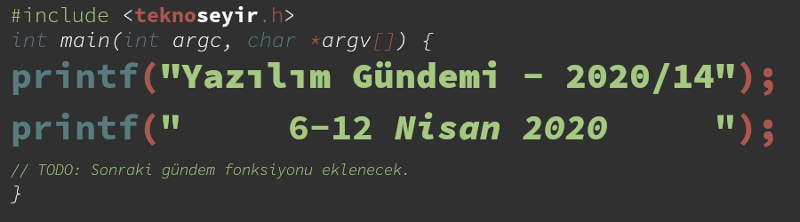
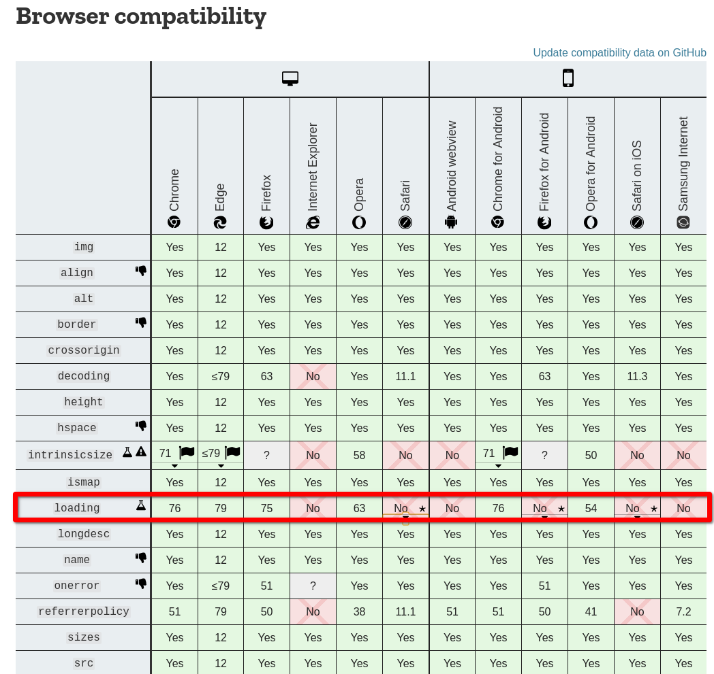
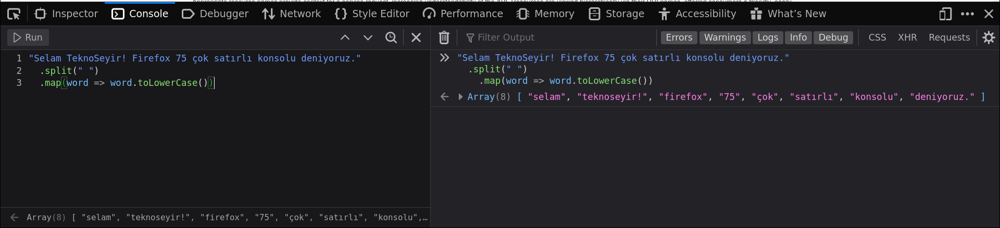
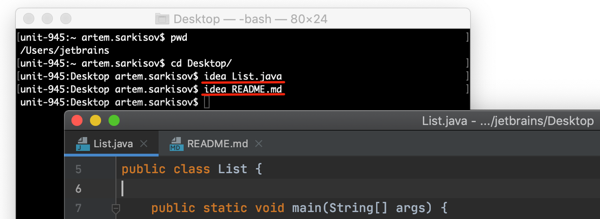
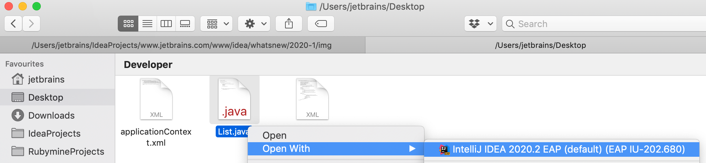
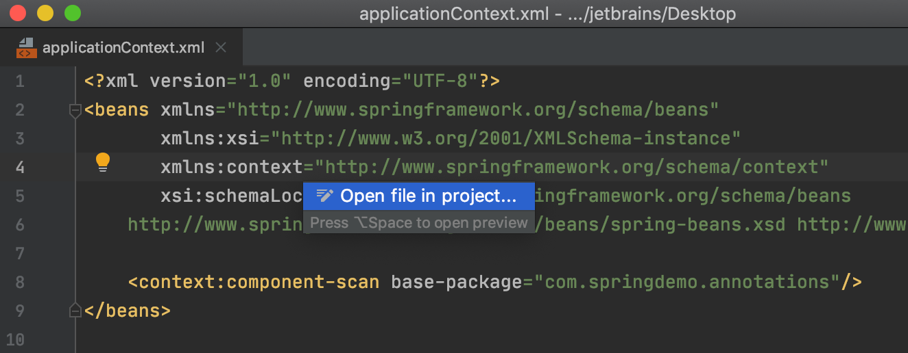
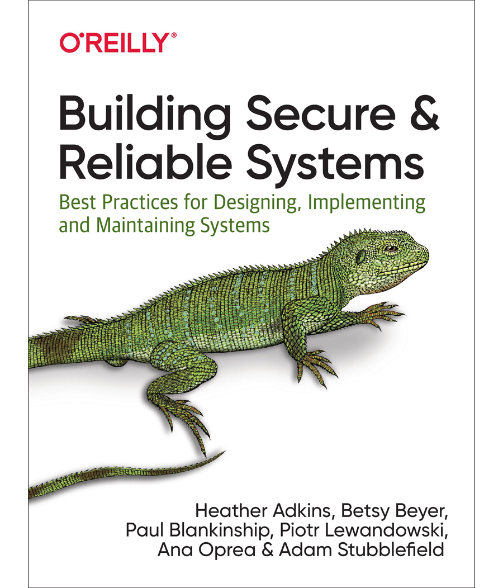
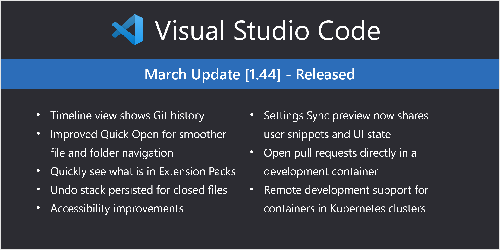

Yazılım Gündemi - 2020/14
6-12 Nisan 2020
İçindekiler
- 1. Qt, 2020 yılı için bir yol haritası yayınladı fakat söylenmeyenler olabilir
- 2. Firefox 75.0 ile gelen yeni özellikler
- 3. IntelliJ IDEA 2020.1 sürümü yayınlandı
- 4. Google SRE yeni kitap tanıttı: "Building Secure and Reliable Systems"
- 5. Visual Studio Code Mart 2020 (1.44) sürümü yayınlandı
- 6. Yaklaşan Etkinlik: "Açık Seminerler (Türkiye Açık Kaynak Topluluğu)"
- 7. Diğer Haberler
- 8. Lisans

< Önceki Gündem | 6-12 Nisan 2020 | Sonraki Gündem >
1 Qt, 2020 yılı için bir yol haritası yayınladı fakat söylenmeyenler olabilir
C++ dünyasının popüler platformlar-arası (cross-platform) uygulama geliştirme framework'lerinden biri olan Qt, bu hafta içerisinde 2020 yılı yol haritasını yayınladı fakat KDE projesinin açık e-posta listesindeki bazı ifadeler 2020 yılı planının söylenmeyen bazı kısımlarını açığa çıkardı. Öncelikle Qt'nin blog yazısı ile birlikte duyurduğu yol haritasına bakalım.
- Qt Design Studio 1.5 sürümü Mayıs ayı içerisinde yayınlanacak.
- Bu sürümde 2 boyutlu ve 3 boyutlu tasarımla ilgili iyileştirilmeler yapılmış, bu konularda çalışmaya devam edeceklermiş.
- Annotations desteği: Uygulamanın tasarımı ve geliştirilmesi devam ederken sadece geliştiricilerin görebileceği notlar bırakabileceğiz. Bir nevi tasarım ekranındaki yorum satırları diyebiliriz.
- Adobe XD vb. diğer araçlar için destek çalışmaları devam ediyormuş.
- Qt Creator aracına C++20 desteği ekleniyor.
- Python ve QML desteklerini iyileştirmek için çalışmalar devam ediyor.
- CMake 3.17 desteği gelecek.
- Qt 5.15 ile birlikte yeni bir Qt for Microcontrollers sürümü de gelecek ve tam QML desteği sağlayacak. Qt for MCUs için araçlar üzerinde çalışılıyor. Qt Design Studio yazılımına MCU desteği gelecek.
- Qt 1.15 sürümü Mayıs ayının sün günlerinde yayınlanacak. Ticari kullanım
lisansı olanlar için LTS (Long-term support/Uzun-dönemli destek) olacak
fakat açık kaynak kullanıcılar için normal bir sürüm olarak gelecek.
- Qt Quick 3D desteğiyle gelecek.
- Metal ve Vulkan gibi grafik API'lerini kullanabilmek için yeni Rendering Hardware Interface gelecek.
- Qt'nin bir sonraki büyük sürümü Qt 6.0'ın bu yılın sonunda yayınlanması planlanıyor.
- Qt'nin araç setindeki yazılımlara Qt Marketplace entegrasyonu eklemek için çalışmalar devam ediyor.
Diğer detayları okumak isterseniz Qt firmasının blog sitesideki şu yazıya bakabilirsiniz. Alternatif
Şimdi gelelim asıl meseleye. Bu yılın ilk yazılım gündemi yazılarının birinde (bkz: Yazılım Gündemi - 2020/05), Qt'nin 2020 yılına değişikliklerle girdiğini ve bunlar arasında da LTS sürümlerinin sadece ücretli lisans kullanıcılarına sunulacağı vardı. Fakat Qt firmasının yukarıdaki yol haritasının yayınlandığı gün, KDE projesinin e-posta listesinden tüm KDE topluluğuna "Qt, Open Source and corona" başlıklı bir e-posta da gönderildi. E-posta'da Qt ve KDE projeleri arasındaki bir takım tarihsel bilgilerden sonra geçtiğimiz hafta Qt firmasının KDE takımlarıyla ile iletişime geçerek, "koronavirüs salgınının yol açacağı ekonomik sorunlar yüzünden yeni yayınlanacak tüm Qt sürümlerinin 12 ay süresince sadece ücretli lisans sahiplerine sunmayı" düşündüklerini iddia eden ifadeler yer aldı. Bunun üzerine 9 Nisan tarihinde bir yazı daha yayınlayarak ilgili bilgilerin, "Qt firmasının plan ve görüşlerini yansıtmadığını" söylediler. Konu tabii ki Reddit gibi platformlarda tartışmalara yol açtı.
C++ ve Qt ekosistemine uzak birisi olarak bu haberi doğru yorumlayamayabilirim. O yüzden aramızdaki bu alanlarda çalışmış kişilerden görüşlerini yorumlar bölümünde belirtmelerini rica ediyorum. Qt'nin gerçekten böyle bir karar verip vermediği ilerleyen haftalarda ortaya çıkacak fakat böyle bir kararın açık kaynak topluluklarına bölünmelere yol açacağı ortada. Umarım Qt firması kararlarını tekrar gözden geçirir.
2 Firefox 75.0 ile gelen yeni özellikler
Mozilla tarafından geliştirilen Firefox tarayıcısının 75.0 numaralı sürümü bu hafta içerisinde yayınlandı. Peki bu yeni sürümle birlikte biz geliştiricileri ilgilendiren neler var? Gelin birkaç tanesini birlikte inceleyelim.
2.1 Tembel resim yükleme (lazy-loading)
Geçtiğimiz yazılım gündemi yazılarından birinde (bkz: Yazılım Gündemi - 2020/07) bu özelliğin W3C tarafından onaylanmış bir internet standardı olduğunu duyurmuştum. İşte o özellik bu hafta Firefox'a da geldi. O yazıyı okumayanlar için kısaca özetlemek gerekirse: artık aşağıdaki gibi etiketlenmiş bir görsel sayfa açıldığında hemen yüklenmeyecek, sadece ekranda görünür olduğunda yüklenecek.
<img src="teknoseyir.png" loading="lazy" alt="TeknoSeyir Logo" />
Bu sayede web sayfalarımız hem bize hem de kullanıcılara gereksiz trafik yükü oluşturmayacak.
Bu özelliği destekleyen tarayıcılar ise şu şekilde:

Şekil 2: Kaynak: Mozilla Developer Network - https://developer.mozilla.org/en-US/docs/Web/HTML/Element/img#Browser_compatibility
Lazy loading özelliği hakkında daha fazla bilgi almak için buraya tıklayabilirsiniz.
2.2 Konsolda çoklu-satır modu ve anında sonuç görme
JavaScript ile web geliştirme yapanlarımızın adeta eli ayağı gibi olan Developer Tools aracının Console kısmında artık çok-satırlı kod yazıp çalıştırabileceğiz. Bu özelliği açmak için Console sekmesindeyken CTRL+B tuşlarına basmanız yeterli.

Çoklu satır modu açıldığında kodlarınızı yazdığınız yerin yanına bir panel daha açılacak. Bu panel kodlarınızı çalıştırdıktan sonra sonuçlarını göreceğiniz ekran. Artık çoklu satır modunda olduğunuz için ENTER ile kodlarınızı çalıştıramayacaksınız, bunun yerine CTRL+ENTER kullanmanız gerekiyor. Ayrıca burada yazdığınız kodları bir dosyaya kaydetmek istiyorsanız da CTRL+S tuş kombinasyonlarını kullanabilirsiniz. Çok-satır modu hakkında daha fazla bilgi için buraya tıklayabilirsiniz.
Yukarıdaki ekran görüntüsünün en altında bir de Array(8) ile başlayan bir
satır görüyorsunuz. O ise bu sürümle birlikte gelen "Instant Evaluation"
özelliği. Biz kodumuzu yazdıkça orası anlık olarak güncelleniyor ve
yazdığımız kodun sonucunu bize ön-izleme olarak sunuyor. Gayet güzel ve
faydalı bir özellik.
2.3 CSS için min(), max(), clamp() fonksiyonları
Bu fonksiyonlar ile artık css tarafında bazı hesaplamalar yapabileceğiz. Şöyle ki:
- min(): Bir ya da daha fazla değer alır ve bunlar içerisinden en küçük olanı döndürür.
- max(): Bir ya da daha fazla değer alır ve bunlar içerisinden en büyük olanı döndürür.
clamp():
minimum,tercih edilenvemaximumolmak üzere üç değer alır. Eğer hesaplanan değer minumum'dan küçükseminimum; maximum'dan büyüksemaximumdeğer geçerli olur. Eğer hesaplanan değer ikisinin arasındaysatercih edilendeğer geçerli olur.Tahmin edebileceğiniz gibi bu fonksiyonların hepsi responsive tasarım için düşünülmüş ve eklenmiş özellikler. Böylece web sitelerimizin tasarımlarında daha özel hesaplamalar yapabileceğiz. Fonksiyonlar hakkında detaylar ve tarayıcı uyumluluğu listesi için her fonksiyonun kendi bağlantısına tıklayabilirsiniz.
Firefox'un bu sürümüyle birlikte gelen diğer özellikler için konu başlığına eklediğim bağlantıya tıklayabilirsiniz.
3 IntelliJ IDEA 2020.1 sürümü yayınlandı
JetBrains tarafından geliştirilen ve topluluk için ücretsiz sürümü de bulunan, Java için geliştirme ortamı (IDE) olan IntelliJ IDEA'nın 2020 yılındaki ilk sürümü olan 2020.1, bu hafta içerisinde yayınlandı. Bu sürümle birlikte gelen birkaç özellik şu şekilde:
- Java 14 desteği,
- Artık JDK'yı direkt IDE'nin içerisinden indirip kullanabileceksiniz,
- LightEdit Modu (detaylar aşağıda),
- Zen Modu: Distraction Free Mode (Sıfır dikkat dağınıklığı modu) ve tam ekran modunu bir araya getiren, odaklı bir şekilde kod yazmayı vaad eden bir mod.
- Varsayılan yazı tipi JetBrains Mono olarak değiştirildi,
3.1 Light Edit Mode

Yazılım Gündemi yazılarını düzenli olarak takip edenler böyle bir özelliğin geleceğinden haberdardı :) (bkz: Yazılım Gündemi - 2020/04) Haberdar olmayan yeni takipçiler için açıklayalım: JetBrains'in IDE'lerini en az bir kez kullanmışsanız biliyorsunuzdur ki, IDE'nin açılması ve projeyle ilgili cache'leme işlemlerinin yapılması çok uzun sürüyordu. Artık terminal'den sadece dosya ismiyle IntelliJ IDEA'yı çağırdığınızda IDE Light Edit modunda açılıyor ve gelişmiş bir metin editörü gibi davranarak sadece o dosyayı açıyor. Proje'nin geri alanını yüklemiyor.

Şekil 5: Light Edit modunu terminal ekranından açmak zorunda değilsiniz. Sağ tık menüsünden "Birlikte Aç" ile de açabilirsiniz.
Yalnız bir istisna var: Eğer açmak istediğiniz dosyanın bağlı olduğu proje zaten normal modda Intellij IDEA üzerinde açıkca, LightEdit modu açılmaz, var olan proje penceresine yeni bir sekme olarak gelir.

Şekil 6: Tekrar normal proje moduna geçmek için File menüsü içerisinden ya da ALT+ENTER ile açılan menüden "Open File in Project" seçeneğini seçebilirsiniz.
Intellij IDEA'nın bu sürümüyle birlikte gelen diğer özellikler için aşağıdaki videoyu izleyebilir ya da konu başlığına eklediğim bağlantıya tıklayabilirsiniz. Aynı şekilde Light Edit modunun detayları için de alt konu başlığına tıklayabilirsiniz.
4 Google SRE yeni kitap tanıttı: "Building Secure and Reliable Systems"

Google'ın Site Reliability Engineering (SRE) projesi kapsamında çıkan 3.kitabı raflarda ve çevrim içi mağazalarda yerini aldı. Google kitabı dijital kopyasını çeşitli formatlarda kendi sitesi üzerinden de dağıtıyor.
- PDF formatında indirmek için: https://landing.google.com/sre/static/pdf/SRS.pdf
- EPUB formatında indirmek için: https://landing.google.com/sre/static/pdf/srs-epub.epub
- Mobi formatında indirmek için: https://landing.google.com/sre/static/pdf/srs-mobi.mobi
5 Visual Studio Code Mart 2020 (1.44) sürümü yayınlandı

6 Yaklaşan Etkinlik: "Açık Seminerler (Türkiye Açık Kaynak Topluluğu)"
7 Diğer Haberler
- Google ve Apple, Covid-19 takibi için işbirliği yapmaya karar verdi. Alternatif
- ABD'de Covid-19 yüzünden COBOL programcıları göreve çağırıldı.
- IBM, ücretsiz COBOL eğitimi vermeyi teklif ediyor.
- Git 15 yaşında! Geliştirici takımından biriyle röportaj yazısı.
- Docker, Compose aracını geliştirmek için yeni bir açık topluluk oluşturdu: Compose Specification. GitHub Organizasyon Sayfası
- Linux Vakfı, güvenlik odaklı kernel olan SeL4'e destek oluyor.
- Mapzen açık kaynaklı haritalama projesi artık Linux Vakfı altındaki Urban Computing Foundation projesi oldu.
- Amazon Elastic Container Service, artık Amazon EFS dosya sistemlerini destekliyor.
- Sandboxie yıllar sonra açık kaynak oldu.
- WebStorm 2020.1 sürümü yayınlandı.
- NodeJS iki dalda yeni sürüm yayınladı:
- Go programlama dilinin 1.41.2 ve 1.13.10 sürümleri yayınlandı.
- Crystal programlama dilinin 0.34.0 sürümü yayınlandı.
- Cue programlama dilinin v0.1.0 sürümü yayınlandı.
- ASP.NET Core için Ext.NET 7.0 Preview yayınlandı.
- Kubernetes IDE'si Lens, v3.2.0 sürümünü yayınladı.
- Apache Flink, Stateful Functions 2.0 sürümünü yayınladı.
- CheerpJ 2.1 sürümü yayınlandı.
- Spring Graal Native 0.6.0 sürümü yayınlandı.
- Horray 2.0.0 sürümü yayınlandı.
- PyOxidizer 0.7 sürümü yayınlandı.
8 Lisans

Yazılım Gündemi - 2020/14 yazısı Eren Hatırnaz tarafından Creative Commons Atıf-GayriTicari-AynıLisanslaPaylaş 4.0 Uluslararası Lisansı (CC BY-NC-SA 4.0) ile lisanslanmıştır.